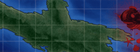

from kancolle_utils import * world = "w22" def generic_battle():# TODO: make it working begin_battle() for i in range(3): compass() formation_line_ahead() accept_battle_results() next_node() def preboss_formation(): return formation_line_ahead() #formation_guard() #1CL 4DD if world == "e1": go_home() accept_expeditions() select_sortie_combat() #select e1 select_event_world() click_random() sortie_to_event_world() begin_battle() compass() formation_guard() accept_battle_results() next_node() compass() formation_guard() accept_battle_results() next_node() formation_line_abreast() boss_preview() accept_battle_results() # bm3 3CL 3DD # CL - falgship if world == "w14": generic_battle() # 2CL BBV CVL if world == "w15": begin_battle() formation_line_abreast() accept_battle_results() next_node() formation_line_abreast() accept_battle_results() next_node() compass() formation_line_abreast() accept_battle_results() next_node() compass() compass() formation_line_abreast() accept_battle_results() #bw2 2CV 4BB if world == "w21": begin_battle() preboss_formation() accept_battle_results() next_node() compass()# check if compass compass() preboss_formation() accept_battle_results() next_node() compass() preboss_formation() accept_battle_results() #transports 2CLT 3CV(B) 1FBB if world == "w22": go_home() accept_expeditions() select_w_2_2() begin_battle() compass() formation_line_ahead() accept_battle_results() next_node() accept_empty_node() # bw7 2DD CVB 2CLT FBB # need radars if world == "w33": go_home() accept_expeditions() select_w_3_3() begin_battle() preboss_formation() accept_battle_results() next_node() compass() compass() preboss_formation() accept_battle_results() next_node() compass() formation_line_ahead() #TODO: night battle # bw7 3DD CAV 2CL # need radars # costs buckets if world == "w34": begin_battle() compass() preboss_formations() accept_battle_results() next_node() compass() compass() formation_line_ahead() #TODO: night battle # bw6 bm6 2CV 1CVL 1CL 2DD if world == "w42": generic_battle()